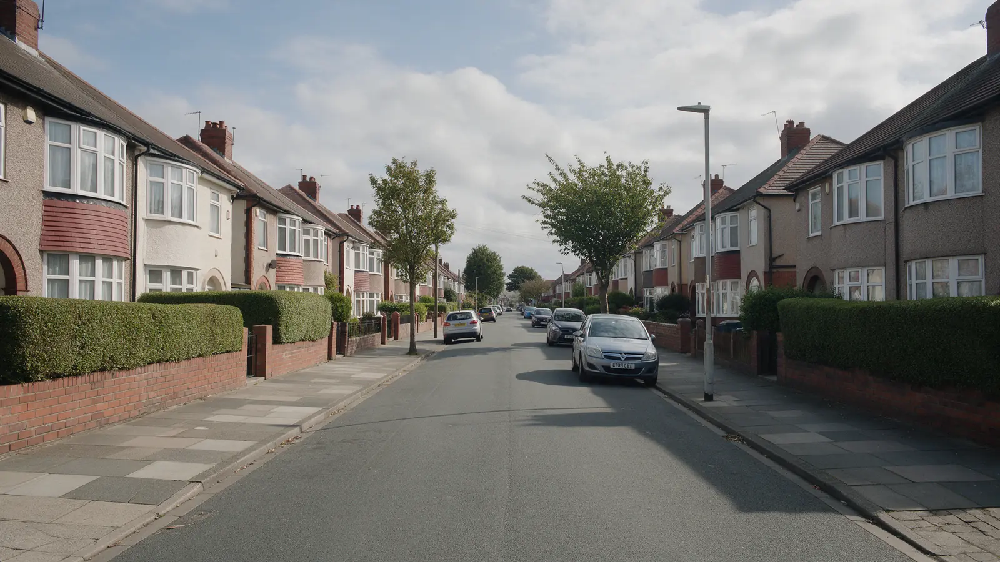
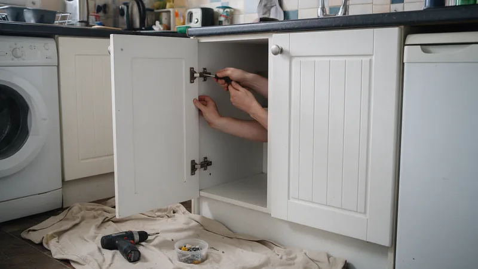
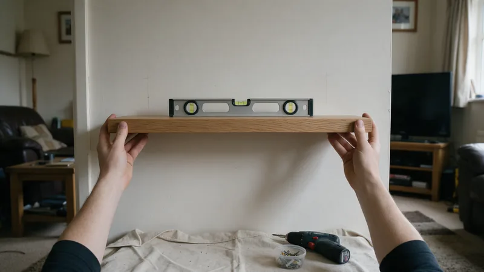
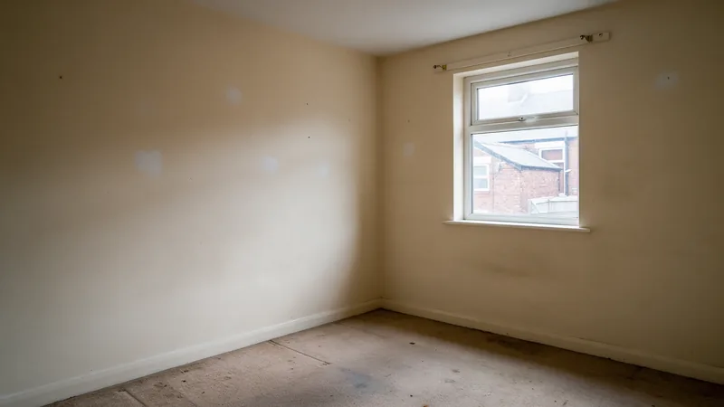
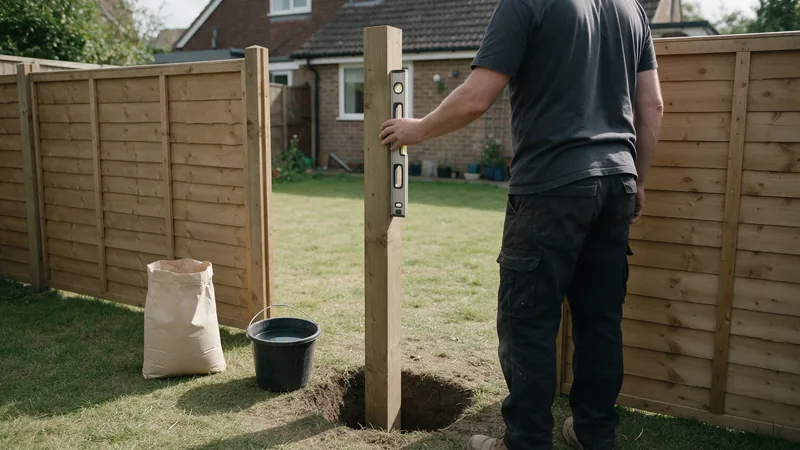

Bootle Sample
Handyman and property repairs in Bootle
Terraces and low rise flats, and plenty of work between tenancies. Sample coverage for this demo: Bootle is a real place, Fettlewick Property Repairs is not a real firm, and nothing here ties it to an address.
What the housing is like
Bootle in one paragraph
Terraces and low rise flats, plenty of landlord work between tenants, and solid brick walls behind the plaster so fixings have something to bite on.
Solid walls behind the plaster in most of the older terraces, which is good news for anything going up on a wall. A plug and a screw and it is done, with none of the hollow wall guesswork.
A lot of the work here is landlord work: a list in an empty week, written up line by line. The empty week is the only week the wardrobes are out of the way.

Generated photoA generated picture of an ordinary British street, not a photograph of Bootle.
In Bootle
What we would take on here

Generated photoSmall repairs around the house
The jobs that are too small to ring anybody about and too annoying to leave. A cupboard door out of line, a handle gone loose, a hole where a shelf used to be.
What this covers Generated photo
Generated photoFlat pack assembly
Wardrobes, beds, desks and the chest of drawers that has been in the box since August. Built square, stood where you want it, and the cardboard folded up and taken out.
What this covers
Generated photoShelves, TVs and curtain poles
Anything that has to go on a wall and stay there. We find out what the wall is made of first, because that is what decides the fixing, not the thing you are hanging.
What this covers Generated photo
Generated photoDoor and lock adjustments
A door that catches on the frame, drags on the carpet or will not shut without a shoulder. Usually hinges, a swollen edge or a keep a few millimetres out.
What this covers
Generated photoLandlord and letting repairs
A list for a property between tenants, or a repair reported by somebody who is living there now. One visit, one write up, and a note of anything that needs a specialist.
What this covers
Generated photoGarden and fence repairs
Fence panels and posts, a gate that drops or drags, a shed roof letting water in, a loose paving slab by the back door. The outside list, done in daylight.
What this coversSample reviews
Made up, and labelled as made up
Had a list of eleven bits and bobs that had been sat on the fridge since spring. Nine of them went in one morning, and the two that were left came with a note saying why.
Dawn, CrosbySample review, written for this demoFront door had needed a shove since the summer. Turned out to be the hinges rather than the door, which is not what I had been told before.
Marcus, LitherlandSample review, written for this demoTwo wardrobes and a bed built while I was at work, boxes flattened and taken away. I came back to a bedroom rather than a pile.
Sadie, BootleSample review, written for this demoSaid straight out that the spotlights were a job for an electrician rather than taking it on. Did the rest of the list and pointed me the right way for that one.
Len, AintreeSample review, written for this demoNearby
The other four areas
A list in Bootle?
Send it over with the room, the thing and what is wrong with it, and we will tell you what fits in a visit.